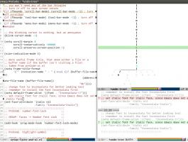
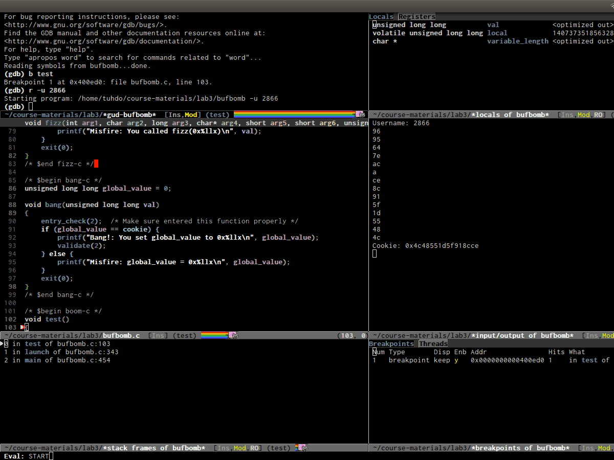
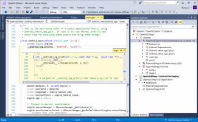
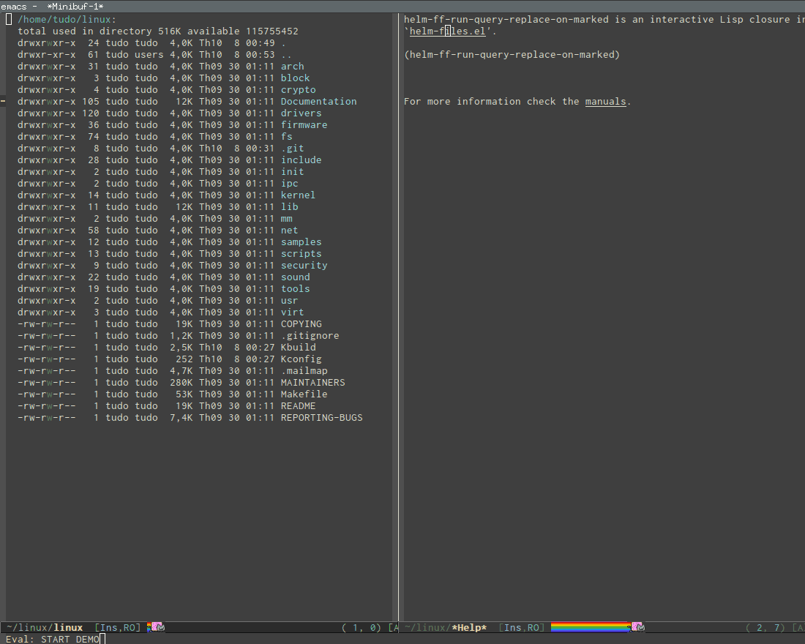

Also on http://tuhdo.github.io/emacs-tutor.html
Emacs Mini Manual (PART 1) - THE …
Well, that's your choice. But I suggest that writing code without any support is …

Emacs Mini Manual (PART 3) - …
Emacs comes with default settings. Some interesting features are disabled and …
Setup Emacs with PDF Tools and …
DEMO (Notice how I press some text in PDF file and Latex buffer jumps to …
 - LISP PRIMER: WHY PARENTHESES MATTER")
Emacs Mini Manual (PART 2) - LISP …
Lisp syntax is inherently simple. At its core, this is all that required to …

C/C++ Development Environment for …
EDE, short for Emacs Development Environment, is a generic interface for …
Emacs for Programming …
Taken from here: EmacsWiki Prefix Meaning C- (press and hold) the …

Peek definition with Emacs frame
Peek definition with Emacs frame In many IDEs, peek definition is a feature that …

Exploring large projects with …
From the homepage: Projectile is a project interaction library for …